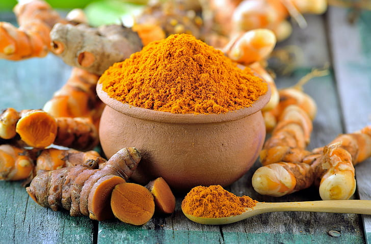
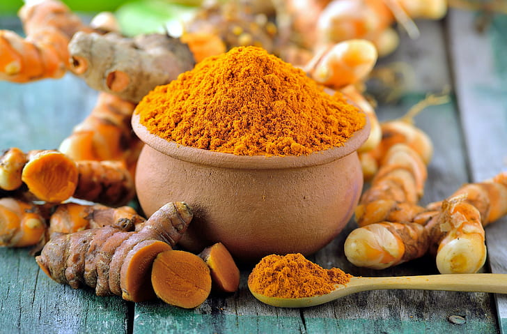

saraswati speices
TURMERIC
 

Turmeric is a flowering plant, Curcuma longa, of the ginger family, Zingiberaceae,the rhizomes of which
are used in cooking.The plant is a perennial, rhizomatous,herbaceous plant native to the Indian subcontinent and
Southeast Asia that requires temperature between 20 and 30°C and a considerable amount of annual rainfall to
thrive. Plants aregathered each yearfor theirrhizomes,some for propagation in the following season and some
for consumption.